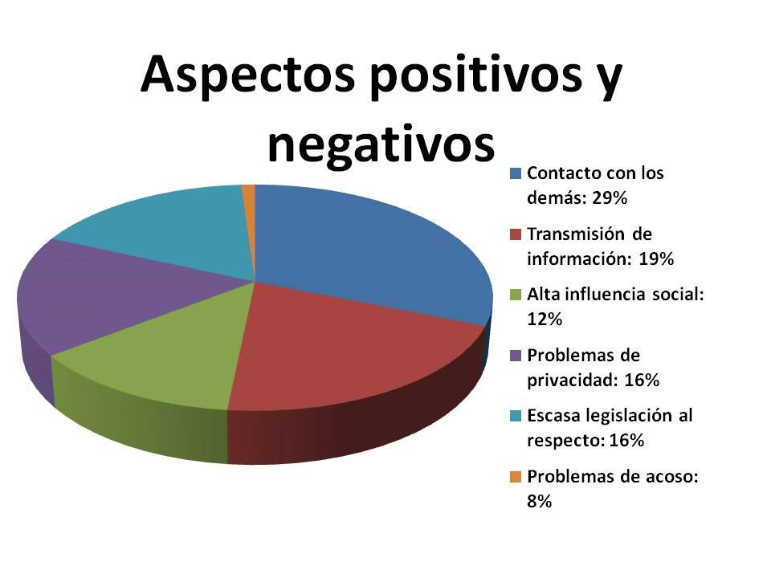

Ventajas y desventajas de las Redes Sociales
VENTAJAS:
- • Conexión global: permiten que las persones se conecten con sus familiares o amigos en cualquier momento y en cualquier parte del mundo, facili
tando la comunicación y el mantenimiento de relaciones a larga distancia.
- • Difusión de la información: permiten compartir noticias, eventos y causas importantes de manera rápida y amplia, lo que puede contribuir a la concien
cia pública y el cambio social.
- • Plataforma para la expresión: ofrecen a las personas la posibilidad de expresar sus opiniones, creatividad, y talentos a través de estas.
- • Oportunidades de aprendizaje: pueden ser una fuente de aprendizaje, ya que brindan acceso a una amplia gama de información, tutoriales y cursos en línea.
- • Oportunidades laborales: durante la pandemia mucha gente quedo desempleada y trabajos a través de plataformas, como ser influencer, ha mejorado su
condición de vida y ha permitido a mucha gente reinventarse.
- • Formar nuevas relaciones interpersonales: encontrar el amor para muchos ha resultado más fácil con la ayuda de aplicaciones que te unen con personas
con tus mismos intereses.
DESVENTAJAS:
- • Adicción: pueden ser adictivas, consumiendo tiempo que podría usarse de manera más productiva y afectando negativamente la salud mental.
- • Comparación social: la exposición constante a la vida aparentemente perfecta de otros en las redes sociales puede llevar a la comparación y la disminución de la autoestima de las personas.
- • Privacidad en línea: compartir información personal en línea puede resultar en problemas de privacidad y seguridad, ya que los datos se pueden recopilar y usar sin el consentimiento del usuario.
- • Desinformación: pueden propagarse noticias falsas y desinformación, lo que puede tener un impacto negativo en la toma de decisiones informadas.
- • Aislamiento social: el uso excesivo de las redes sociales puede contribuir al aislamiento social del mundo real, ya que las interacciones de cara a cara disminuyen.
- • Impacto en la salud mental: comparación constante, ciberacoso, necesidad de validación, entre otros pueden contribuir a problemas de salud mental como la ansiedad, depresión y la soledad.
vida social

Anterior
siguiente